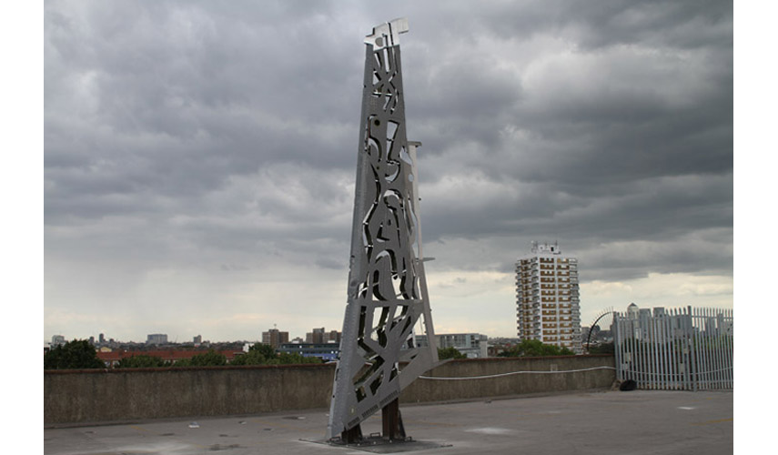

Airplane wings are a symbol of a modern movement, the explosion of fluxuations and of reduced distances between remote societies. Stood up vertically like totems, they invite questions about the role that technology plays in our concept of modernity and suggest that our devotion to science can be seen as the remains of an archaic system of thought. The airplane wings are cut and perforated in Celtic and Polynesian patterns - patterns inspired by cultures separated by time and space - evoking images of intertwining cultures that deny historical delimitations. Various sources of inspiration converge on the concept of cultural anthropology and are differentiated by “turns”, or processes of interdisciplinary translations between methodic theories and impulses in research. Translation can be developed as a foundational analysis that fulfills cultural requirements and seeks to do justice in the context of potentially tense “cultural encounters”.
